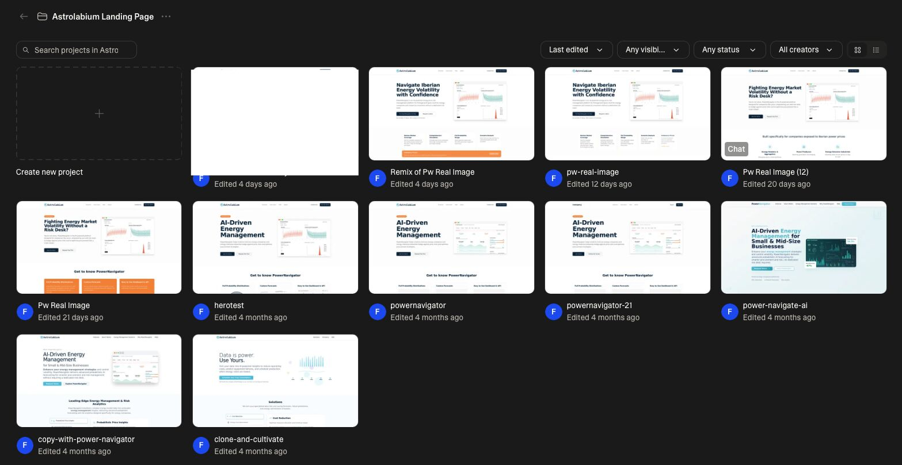

How Many Versions Are Enough to Decide on a Final Design?
February 6, 2026 · Reha Discioglu
I'm preparing the launch pages for our new features at Astrolabium. I've been using Lovable for prototyping, and I realized I've already gone through 11 different versions of the landing page just to test the copy and visuals.

Apart from coding, the biggest AI unlock for me is the removal of friction in the creative process. Coming from experience design, I know that every copy change in Figma means manual tweaking. It's static work that quietly makes you stick with what you have because iterating isn't worth the effort.
With AI, I don't have to be "precious" about my versions. I can produce endless iterations and actually feel the product by clicking around in a live environment. It shifts the focus from designing a "perfect" screenshot to finding the right experience.